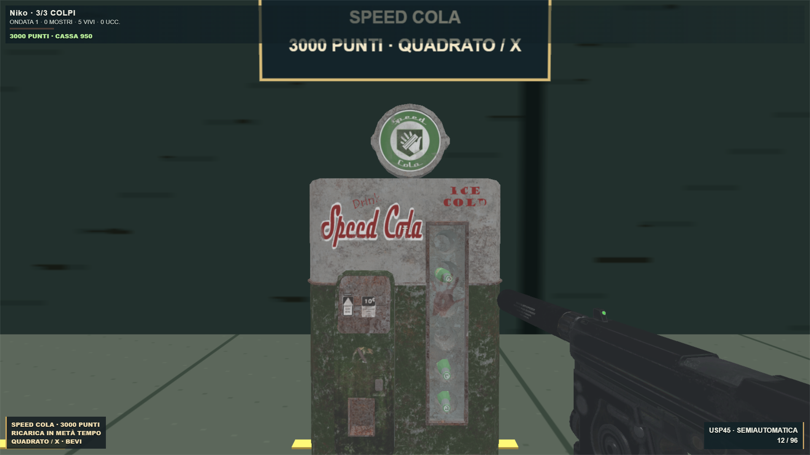
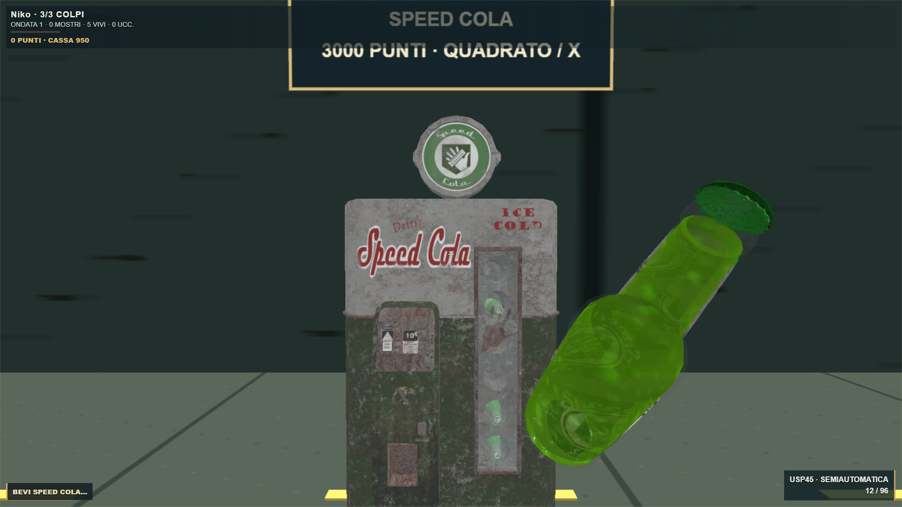
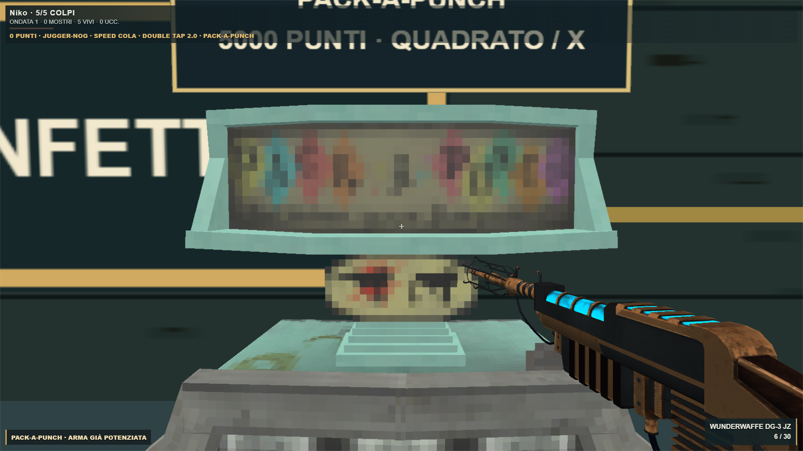

Perk, Pack-a-Punch e Wunderwaffe
Usa Quadrato / X vicino ai distributori e al Pack-a-Punch; sul telefono premi USA. Restano50 punti per uccisione e950 per la Mystery Box.
| Oggetto | Costo | Effetto |
|---|
| Jugger-Nog | 2500 | Da3 a5 colpi per morire |
| Speed Cola | 3000 | Ricariche in metà tempo |
| Double Tap2.0 | 2000 | Cadenza+33%, due proiettili balistici per munizione |
| Pack-a-Punch | 5000 | Deposita, attendi5s e ritira: danno e caricatore×2 |
| Wunderwaffe DG-2 | Mystery Box | Scarica a catena fino10 nemici;3/15, Pack6/30 |
Modelli forniti integrati, bottiglie e bevuta, armi e perk sull’HUD. Le bottiglie PHD/Quick Revive sono decorative: questa integrazione mantiene l’eliminazione e l’inventario singolo di Orda. Effetti ispirati ai classici, con resistenza base3 come già richiesto.

Speed Cola · distributore originale e acquisto a punti
Bottiglia originale · animazione della bevuta
Wunderwaffe DG-3 JZ · modello originale in prima personaTest mirati, pad e telefono, cinque visuali, typecheck e build superati. Dettagli, fonti e limiti · Party Game
Asset CC BY4.0, crediti conservati. Nessun commit, push o deploy.